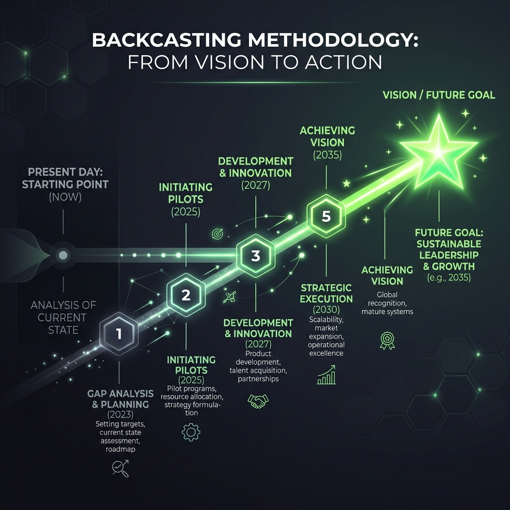

کار از آخر به اول؛ تصویرسازی آینده مطلوب و بازگشت گامبهگام به امروز برای تعیین سیاستها، موانع و اقدامات عملی.

تعارض پارادایم روند-محور و انتخاب-محور در برنامهریزی کلان.
یک سناریو را انتخاب کنید و گامهای خط زمانی معکوس را ببینید.
توضیحات کلی سناریو...
هدف بلندمدت را تعریف کنید و گامهای معکوس را تا امروز ترسیم کنید.
تصویرسازی آینده مطلوب: تعریف شاخصهای هنجاری و چشمانداز هدف.
تحلیل شکاف (Gap Analysis): فاصله ساختار فعلی با تصویر مطلوب.
طراحی سیاست و مقررات: ابزارهای قانونی، مالی و فنی گذار.
نقشه راه انطباقی: اقدامات کوتاهمدت، میانمدت و بلندمدت.